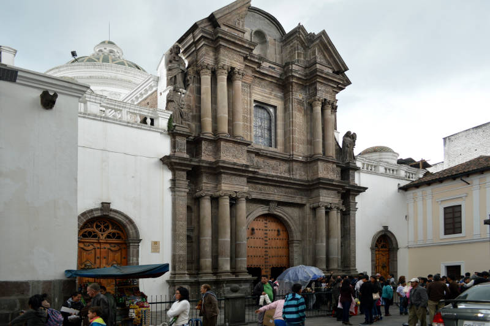
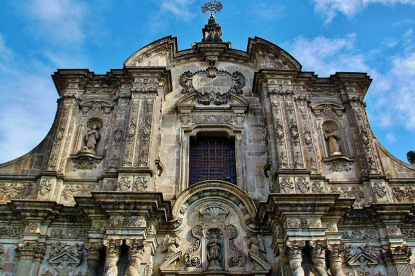
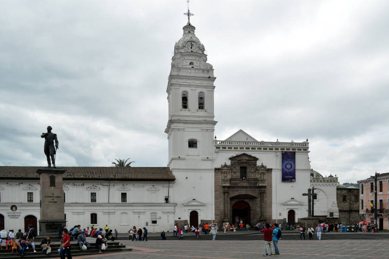
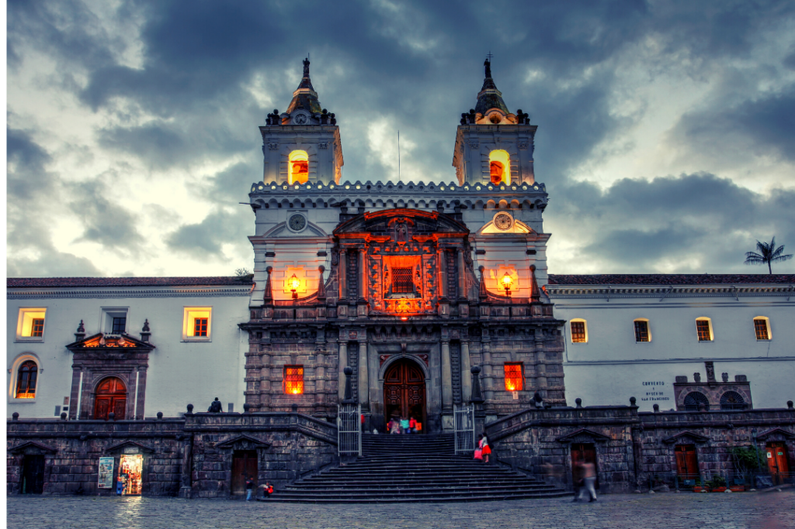
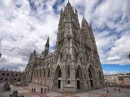

Ruta de las Iglesias





Resumen de la actividad
- Ubicación: Centro Histórico de Quito
- Tiempo de duración de actividad: 2 horas
- Ambiente: Colonial, Barroco, Religioso
- Precio promedio: $
- Horario: Abierto todos los días.
Quito es conocida como el "Claustro de América". Cuenta con más de 60 iglesias y capillas. La mayor parte de estas se concentran en el centro histórico. Por ello, te invitamos a esta actividad, donde lo máximo que pagarás será la entrada a varios conventos, ya que al tener todas las iglesias en un mismo sector, tranquilamente podemos realizar caminatas a todas ellas.
Video Promocional
Reseñas
| Usuario | Fecha | Calificación | Comentario |
|---|---|---|---|
| Alejo23 | 2023-06-23 | 5/5 | El tour es de lo mejor, conocer a Quito es top! |
| Vale44 | 2023-01-30 | 4.5/5 | Buen tour, pero la caminata es muy cansada |